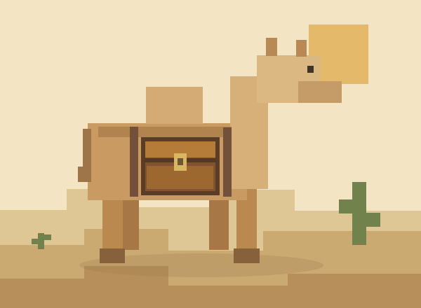

Attach a chest
Right-click an adult camel while holding a chest. The chest appears on both sides.
Give your adult camel a chest and 15 inventory slots. Ready for your next desert trip, on Fabric and NeoForge.
0.1.1 · Fabric + NeoForge · MIT

Donkey and mule storage behaviour, brought to your camels. The mod adds inventory space and a visible chest.
Right-click an adult camel while holding a chest. The chest appears on both sides.
Sneak and right-click the camel. There are 15 storage slots alongside the saddle slot.
The inventory is saved with the world. If the camel dies, it drops its chest and stored items.
The additional storage stays with the camel. The saddle slot is separate.
Schematic inventory illustration. Numbered slots are not the game interface.
15 additional storage slots
Match the file to your game version and loader. No extra mod dependencies are required.
| Minecraft | Loader | Java | Download · 0.1.1 |
|---|---|---|---|
| 1.21.1 | Fabric 0.19.3+ | 21 | JAR ↓ · SHA-256 |
| 1.21.1 | NeoForge 21.1.248+ | 21 | JAR ↓ · SHA-256 |
| 1.21.11 | Fabric 0.19.3+ | 21 | JAR ↓ · SHA-256 |
| 1.21.11 | NeoForge 21.11.45+ | 21 | JAR ↓ · SHA-256 |
| 26.2 | Fabric 0.19.3+ | 25 | JAR ↓ · SHA-256 |
| 26.2 | NeoForge 26.2.0.66+ | 25 | JAR ↓ · SHA-256 |
Put the matching JAR into your Fabric or NeoForge installation’s mods folder and start the game.
Install the matching mod file on the server and all clients. Fabric and NeoForge files are separate builds.
Usage, configuration and project information in the repository.
Camel Chest lists no extra mod dependency. Use the matching Fabric or NeoForge loader and its corresponding JAR.
Yes. For multiplayer, install Camel Chest on both clients and the server.
Chests can be attached to adult camels.
The attached chest and stored items are dropped.